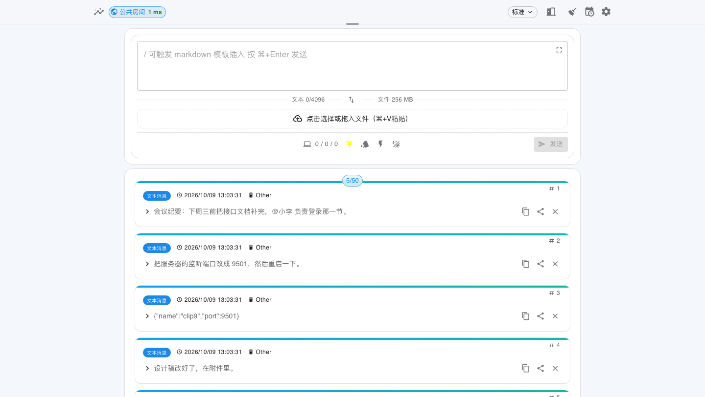
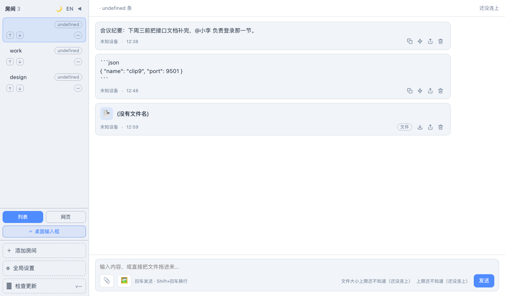
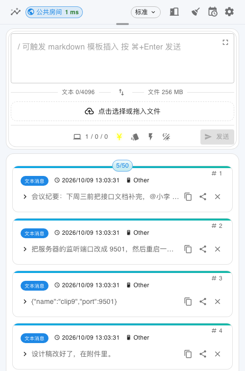

手机复制，电脑粘贴。文本、图片、文件在任意设备之间实时互传，而数据一直留在你自己的机器上。

一端粘贴，另一端立刻收到 —— 中间没有第三方服务器，也没有账号。

同一份代码，六种落地方式。路由器上 16 MB flash 也跑得动。

内置动作库：Markdown 渲染、JSON 美化、编解码、汉字注音、日期计算…… 也能把几个动作串成流水线。
默认监听 9501，装完打开浏览器就是界面。